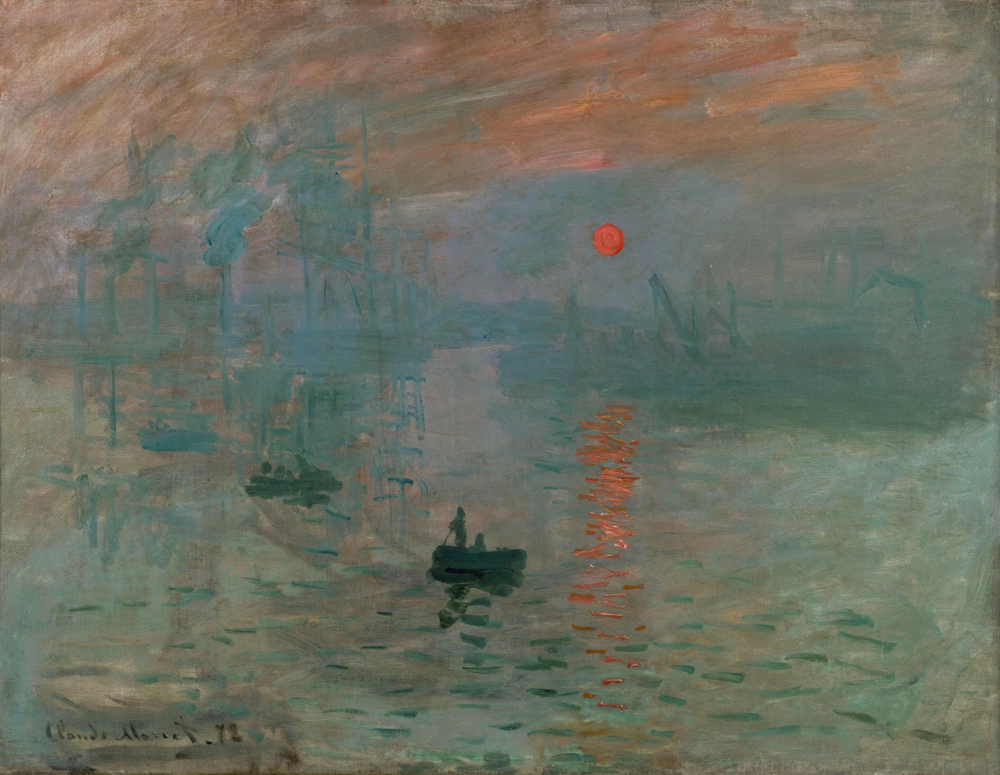
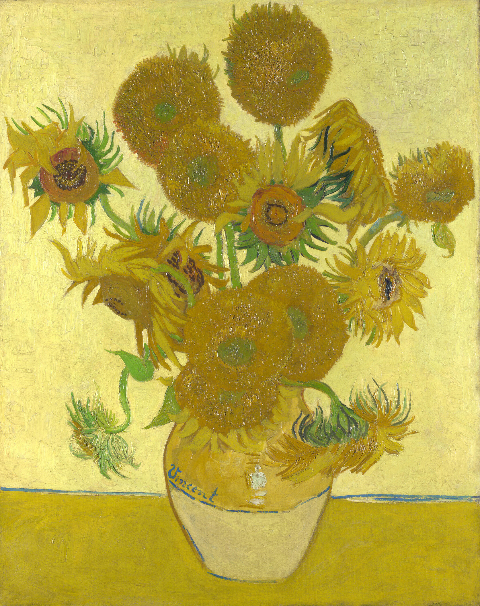
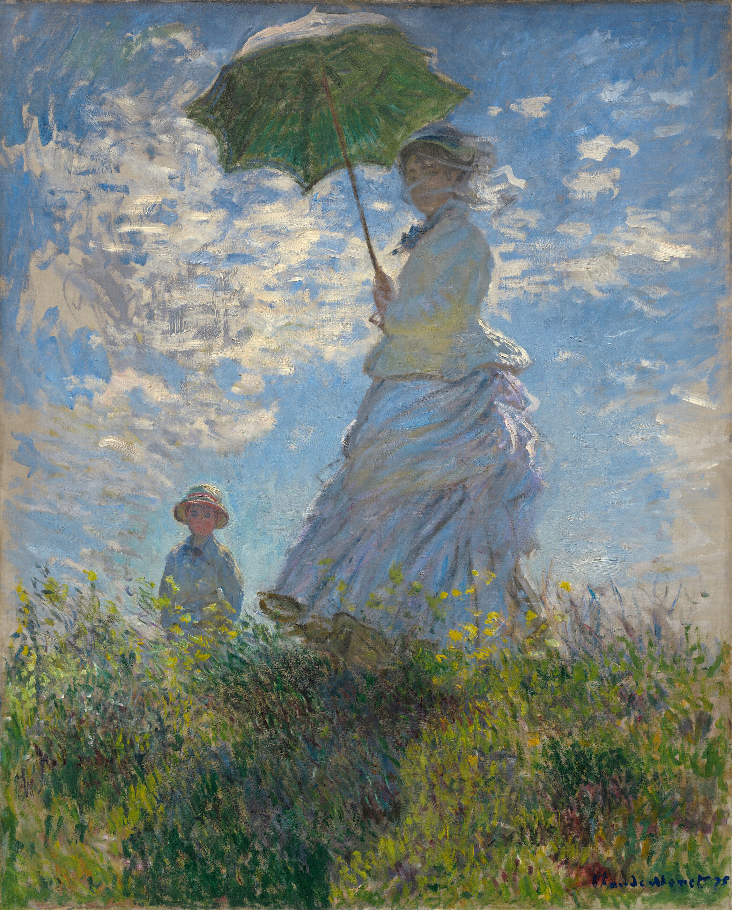
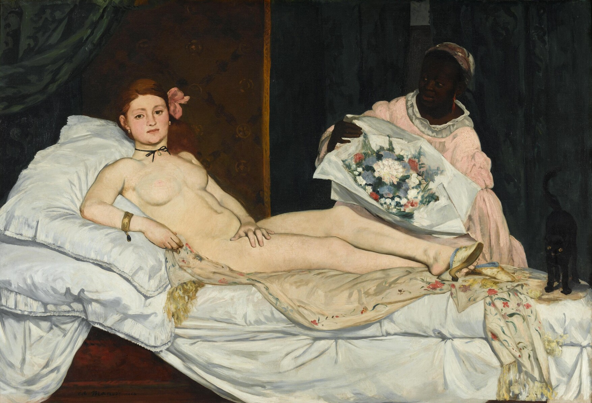
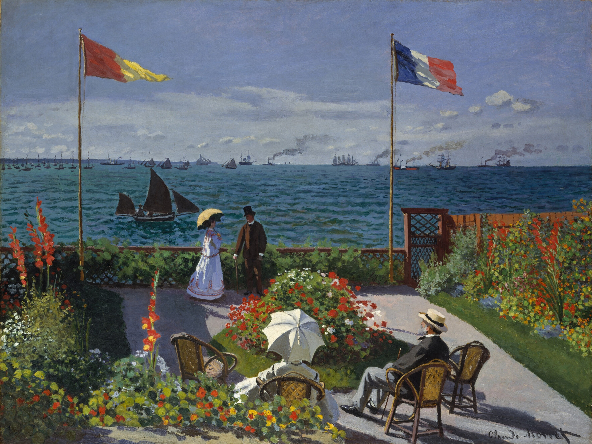
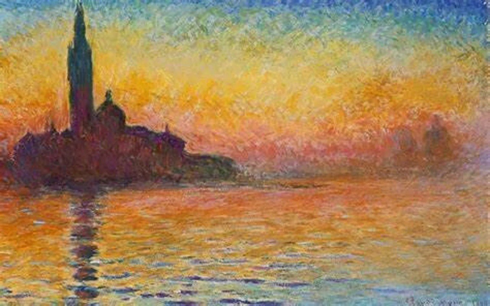
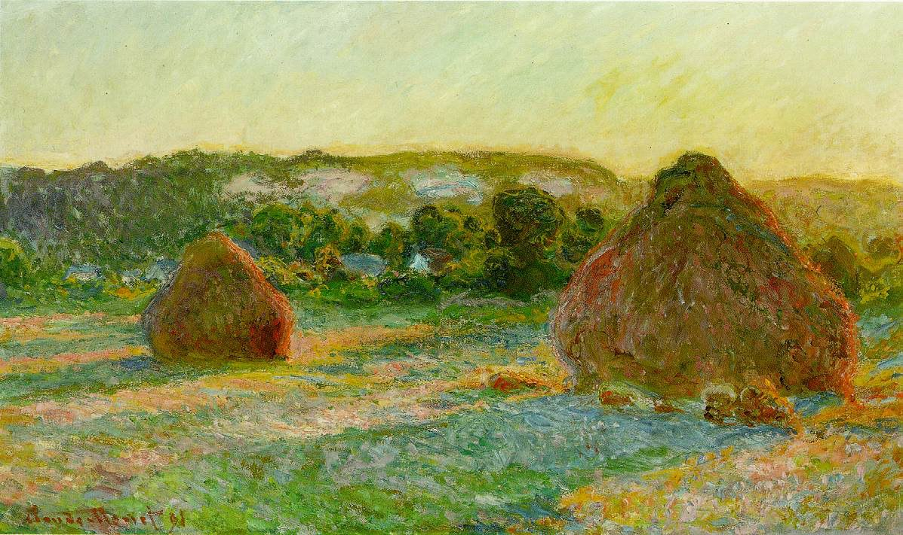
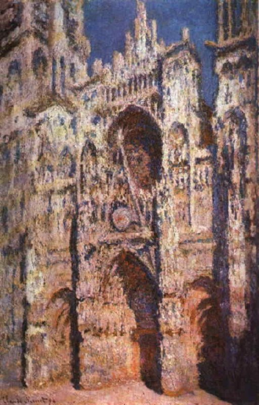
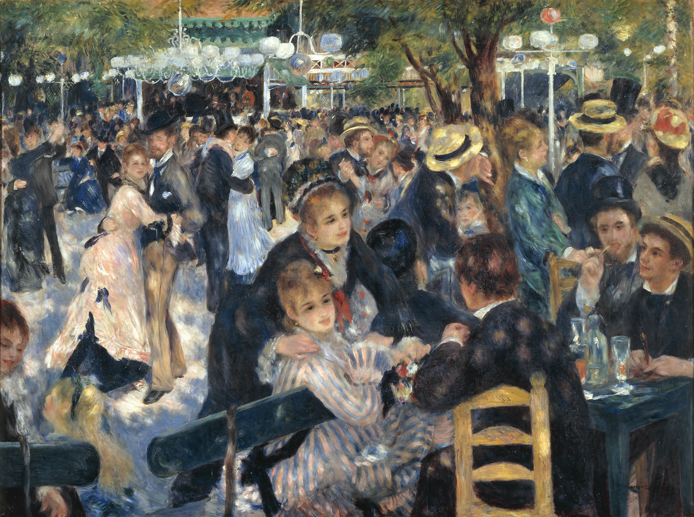

Meesterwerk: Impression, soleil levant
Claude Monet, 1872

⚜️ UITGEBREIDE STIJLFIGUREN
🖌️ PENSEELVOERING
Losse, zichtbare streken: Snelle, spontane penseelstreken die niet verblend worden. Elk gebaar blijft zichtbaar.
Schetsachtig: Werken lijken "onafgewerkt" volgens academische normen. Dit is bewust: het moment telt meer dan details.
🎨 KLEUR & LICHT
Primaire kleuren: Geen zwart voor schaduwen, maar complementaire kleuren.
Optische menging: Kleuren worden naast elkaar geplaatst om door het oog te mengen.
🌅 LICHT EFFECTEN
En plein air: Schilderen buiten om direct licht te vangen.
Weerspiegeling: Water, mist, en atmosfeer worden centrale onderwerpen.
👁️ COMPOSITIE
Afgesneden figuren: Geïnspireerd door fotografie en Japanse prenten.
Vlakke ruimte: Diepte door kleurcontrast, niet door perspectief.
📚 TIJDSGEEST CONTEXT (1860-1890)
🌍 POLITIEK PERSPECTIEF - UITGEBREID
1. Frans-Pruisische Oorlog & Parijse Commune (1870-1871)
Politieke Context: De Frans-Pruisische Oorlog (juli 1870 - januari 1871) eindigde in een verpletterende Franse nederlaag. Napoleon III werd gevangengenomen bij Sedan (1 september 1870), wat het einde betekende van het Tweede Franse Keizerrijk. De daaropvolgende Parijse Commune (18 maart - 28 mei 1871) was een revolutionair experiment dat 72 dagen standhield voordat het bloedig werd onderdrukt, met naar schatting 10.000-20.000 doden tijdens de "Semaine Sanglante" (Bloedige Week).
Hoe politiek de impressionistische stijl beïnvloedde:
- Fragiliteit van stedelijke ruimte: De losse, "onafgewerkte" penseelstreken weerspiegelen de instabiliteit en onzekerheid van het politieke landschap
- Vluchtigheid: Het vastleggen van het vluchtige moment is een reactie op de politieke onvoorspelbaarheid - niets is permanent
- Afwezigheid van heldendom: Geen glorierijke oorlogsscènes, maar alledaagse taferelen = afwijzing van nationalistische propagandakunst
Specifieke kunstwerken:
- Monet, "De Tuin van de Prinses" (1867) - Schilderde Parijse tuinen die later door Haussmann werden vernietigd. De vlotte penseelstreken suggereren een wereld die elk moment kan verdwijnen - wat ook gebeurde.
- Pissarro, "De Boulevard Montmartre" serie (1897) - Schilderde de nieuwe Haussmann-boulevards, maar met een zachte, menselijke toets die de politieke motieven (controle, onderdrukking) verzacht tot democratische publieke ruimtes.
- Manet, "De Burgeroorlog" (1871-73) - Schilderde de nasleep van de Commune met gedode Communards. De losse, schetsmatige weergave maakt het geen heroïek maar een trieste realiteit.
Interpretatie: De "incompleetheid" van impressionistische werken is geen technische tekortkoming maar een politieke keuze. In een tijd waarin steden werden platgewalst en regimes vielen, schilderen wat "nu" is - onaf, veranderlijk, fragiel - is een statement tegen de academische traditie van "eeuwige waarheden" en nationalistische grootspraak.
2. Derde Franse Republiek (1870-1940)
Politieke Context: De Derde Republiek begon in september 1870 en bracht een nieuwe democratische idealen met zich mee. Republikeinse waarden - vrijheid, gelijkheid, broederschap - werden de norm. Dit was ook de tijd van het Salon des Refusés (1863, op bevel van Napoleon III) en later de onafhankelijke Impressionistententoonstellingen (1874-1886) die de academische macht van de Salon-jury braken.
Hoe politiek de impressionistische stijl beïnvloedde:
- Democratisering van kunst: Het organiseren van eigen tentoonstellingen, onafhankelijk van de staatsgecontroleerde Salon, was een daad van artistieke democratie
- Horizontale composities: Brede, vlakke composities die het oog niet naar een centraal punt dwingen = visuele gelijkheid, geen hiërarchie
- Alledaagse onderwerpen: Café's, parken, stations - plaatsen waar alle klassen samenkomen = democratische ruimtes
Specifieke kunstwerken:
- Renoir, "Bal du moulin de la Galette" (1876) - Arbeiders, winkeliers en kunstenaars dansen door elkaar. De horizontale compositie geeft niemand voorrang. De "schetsachtige" stijl maakt geen onderscheid in klasse - iedereen is gelijk in het licht.
- Caillebotte, "Parijse Straat op een Regendag" (1877) - Brede Haussmann-boulevard met figuren verspreid over het vlak. De asymmetrische compositie weigert een held; het is een samenleving van individuen.
- Monet, "Impression, soleil levant" (1872) - De titel werd de naam van de beweging. Het werk weigert "af te zijn" - het is een momentopname, niet een eeuwig monument. Democratie van het moment versus aristocratie van de eeuwigheid.
Interpretatie: De afwezigheid van klassieke hiërarchie in composities (geen centrale held, geen verheven onderwerpen) is een visuele vertaling van republikeinse idealen. Elke penseelstreek telt evenveel, elke figuur heeft dezelfde waarde, elk moment is het vastleggen waard.
3. Industrialisatie & Verstedelijking
Politieke Context: Tussen 1853 en 1870 transformeerde Baron Haussmann Parijs van een middeleeuwse stad naar een moderne metropool. Brede boulevards vervingen smalle steegjes. De spoorweg verbond Parijs met de rest van Frankrijk. Fabrieken vermenigvuldigden zich. Deze verandering was niet neutraal - Haussmann's boulevards maakten ook het neerslaan van opstanden makkelijker (brede straten = kanonnen kunnen door).
Hoe politiek de impressionistische stijl beïnvloedde:
- Stations als kathedralen: Monet's stationschilderijen tonen de moderne "kerk" van snelheid en technologie - maar zonder kritiek, met pure observatie van licht en stoom
- Quick brushwork = moderne snelheid: De snelle penseelvoering weerspiegelt het versnelde tempo van het moderne leven
- Nieuwe sociale ruimtes: Café's, parken, danszalen werden onderwerp - niet historische scènes
Specifieke kunstwerken:
- Monet, "La Gare Saint-Lazare" serie (1877) - Stoom, licht en moderne architectuur. De losse penseelstreken vangen de vluchtigheid van stoom - moderniteit is ongrijpbaar. Geen kritiek op industrialisatie, maar pure visuele fascinatie.
- Degas, "Absint" (1876) - Een café in Parijs. De snelle, bijna ontmantelde stijl past bij het moderne, anonieme stadsleven. De geïsoleerde figuren tonen de eenzaamheid van de moderne metropool.
- Pissarro, "Les Halles" (vor 1882) - De centrale markt van Parijs. De levendige, snelle penseelstreken vangen de chaos en energie van moderne handel en consumptie.
Interpretatie: De Impressionisten schilderen niet de politieke gevolgen van industrialisatie (uitbuiting, vervuiling) maar de visuele ervaring ervan. Dit is zowel een positieve als neutrale houding - ze documenteren zonder te oordelen. De "snelle" stijl is een esthetische vertaling van de versnelde moderne tijd.
4. Arbeidersbewegingen & Sociale Ongelijkheid
Politieke Context: De jaren 1870-1890 zagen de opkomst van socialisme, anarchisme en vakbonden. De Parijse Commune (1871) was een hoogtepunt van arbeidersmacht. Marx en Engels analyseerden de Commune als het eerste voorbeeld van de "dictatuur van het proletariaat". Tegelijkertijd floreerde de bourgeoisie en ontwikkelde zich een consumentencultuur.
Hoe politiek de impressionistische stijl beïnvloedde:
- Arbeiders zonder pathos: Waar Realisten (Courbet, Millet) arbeiders idealiseerden, toonden Impressionisten ze als gewone mensen in hun dagelijks leven
- Bourgeoisie als onderwerp: Niet alleen kritiek op rijken, maar ook fascinatie voor hun levensstijl
- Klasse-mixing: Scènes in parken en café's tonen verschillende klassen naast elkaar
Specifieke kunstwerken:
- Renoir, "Bal du moulin de la Galette" (1876) - Arbeiders en winkeliers dansen in Montmartre. De lichte, vrolijke stijl toont arbeidersplezier zonder sociaal protest. Het is geen politiek statement maar een observatie van arbeiderscultuur.
- Degas, "De Strijksters" (1884-86) - Wasvrouwen aan het werk. De lossere, expressievere stijl benadrukt de fysieke inspanning. Maar het is geen aanklacht - het is observatie van de realiteit.
- Pissarro, "De Oogst" (1882) - Boeren aan het werk. Pissarro was anarchistisch gezind, maar zijn stijl is niet agressief. De harmonieuze kleuren suggereren een ideaal van arbeid in samenwerking met natuur.
Interpretatie: De Impressionisten zijn politiek "neutraal" in de zin dat ze geen expliciete propaganda maken. Maar door arbeiders en bourgeoisie met dezelfde stijl te schilderen - dezelfde losse penseelstreken, hetzelfde licht - claimen ze visuele gelijkheid. De democratisering van de stijl is zelf een politiek statement.
5. Bourgeois Consumentencultuur
Politieke Context: De Tweede Industriële Revolutie creëerde een nieuwe middenklasse met koopkracht en vrije tijd. Warenhuizen (Le Bon Marché, 1852), café's, theaters en parken werden de nieuwe sociale arena's. De bourgeoisie consumeerde niet alleen goederen maar ook "ervaringen" - een dagje aan de Seine, een bezoek aan het theater, een dans in Montmartre.
Hoe politiek de impressionistische stijl beïnvloedde:
- Leisure als onderwerp: Vrijetijdsbesteding werd serieus genomen als kunstwaardig onderwerp
- Licht als luxe: De nadruk op zonlicht weerspiegelt de mogelijkheid om tijd buitenshuis door te brengen
- Snelle impressie = consumptie: Het vastleggen van vluchtige momenten past bij een cultuur van snelle ervaringen
Specifieke kunstwerken:
- Monet, "Vrouw met een Parasol" (1875) - Camille Monet en haar zoon in een veld. De nadruk op frisse lucht, vrije tijd en moderne mode. Het is een ideaalbeeld van bourgeois gezinsleven.
- Renoir, "De Lunch van de Roeiers" (1881) - Bourgeois genietend van maaltijd en drank aan de Seine. De losse, vrolijke stijl viert het plezier van consumptie en ontspanning.
- Manet, "Een Bar in de Folies-Bergère" (1882) - Een barmeisje in het beroemde café-concert. De complexe compositie met spiegelreflecties toont de illusie en werkelijkheid van moderne consumptiecultuur.
Interpretatie: De Impressionisten maken geen moreel oordeel over consumptiecultuur - ze schilderen het. De vluchtige stijl past bij een samenleving die in het moment leeft. De nadruk op licht en plezier kan worden gezien als het verheerlijken van bourgeois levensstijl, maar ook als het democratiseren van wat "kunstwaardig" is.
6. Wetenschap van het Oog & Democratie van Visie
Politieke Context: De jaren 1860-1880 zagen grote vooruitgangen in optica en kleurentheorie. Chevreul's wet van simultaan contrast (1839), Young-Helmholtz theorie van kleurperceptie, en nieuwe synthetische pigmenten (cobaltblauw, vermiljoengroen, cadmiumgeel) veranderden hoe kunstenaars konden schilderen. Tegelijkertijd verspreidde het positivisme van Auguste Comte: alleen observeerbare feiten tellen.
Hoe politiek de impressionistische stijl beïnvloedde:
- Afwijzing van academische regels: Als kleurtheorie aantoont dat schaduwen blauw zijn (niet zwart), waarom zou je dan academische regels volgen die zwart eisen?
- Democratisering van visie: Als iedereen met een normaal oog hetzelfde kan zien, is het schilderen van die waarneming een democratische daad
- Wetenschap vs. traditie: De keuze voor wetenschappelijke observatie boven historische conventie is een politieke keuze voor vooruitgang
Specifieke kunstwerken:
- Monet, "Hooibergen" serie (1890-91) - Dezelfde hooibergen onder verschillende lichtomstandigheden. De wetenschappelijke methode: één onderwerp, variabel is alleen licht. De serie toont dat waarneming relatief is - er is geen "ware" kleur, alleen verschillende visies.
- Monet, "Kathedraal van Rouen" serie (1892-94) - 30 schilderijen van dezelfde gevel. De dik aangebrachte verf (impasto) en zuivere kleuren demonstreren optische menging. Het is wetenschap in dienst van kunst, en kunst in dienst van wetenschap.
- Pissarro, "Boulevard Montmartre" serie (1897) - Dezelfde straat op verschillende tijden. De verticale penseelstreken en zuivere kleuren passen de nieuwste theorieën toe. Pissarro was de meest politiek bewuste Impressionist (anarchist) - zijn wetenschappelijke methode was ook een politieke keuze tegen academische dogma's.
Interpretatie: De "puur visuele" benadering van de Impressionisten is ogenschijnlijk apolitiek, maar de keuze voor wetenschappelijke observatie boven academische traditie is radicaal. Het afwijzen van wat "hoort" (zwarte schaduwen, gladde verf, historische onderwerpen) ten gunste van wat je daadwerkelijk ziet (gekleurde schaduwen, zichtbare penseelstreken, alledaagse taferelen) is een daad van intellectuele en artistieke bevrijding.
7. Samenvatting: Politiek → Stijl → Kunstwerken
| Politiek Punt | Impressionistische Stijlrespons | Kernwerk |
|---|---|---|
| Franco-Pruisische Oorlog & Commune (1870-71) | Fragiliteit, vluchtigheid, afwezigheid van heldendom | Monet "Impression, soleil levant" (1872) |
| Derde Republiek (1870) | Democratisering, horizontale composities, alledaagse onderwerpen | Renoir "Bal du moulin de la Galette" (1876) |
| Industrialisatie & Verstedelijking | Snelle penseelvoering, moderne ruimtes, stations als kathedralen | Monet "La Gare Saint-Lazare" (1877) |
| Arbeidersbewegingen | Arbeiders zonder pathos, klasse-mixing, visuele gelijkheid | Degas "De Strijksters" (1884-86) |
| Bourgeois consumptiecultuur | Leisure als onderwerp, licht als luxe, vluchtige momenten | Manet "Bar in de Folies-Bergère" (1882) |
| Wetenschap van visie | Wetenschappelijke methode, series, kleurtheorie | Monet "Hooibergen" serie (1890-91) |
De Impressionisten waren geen politieke activisten in de traditionele zin - ze maakten geen propagandakunst. Maar hun stijlkeuzes (losse penseelstreken, alledaagse onderwerpen, vluchtigheid, democratische composities) waren politieke statements tegen de academische, aristocratische kunsttraditie. Door te schilderen wat ze zagen, niet wat ze "zouden moeten zien", claimden ze artistieke vrijheid in een tijd van politieke verandering.
📖 LITERAIR PERSPECTIEF
- Naturalisme en Realisme in de literatuur (Zola, Flaubert) benadrukken het observeren van het alledaagse leven
- Baudelaire's "De schilder van het moderne leven" (1863) definieert de moderne kunstenaar als iemand die de "transitorische, vluchtige, contingentie" van het moment vangt
- De novelle wordt populair - korte, intense impressies van het leven
🧠 PSYCHOLOGISCH PERSPECTIEF
- De opkomst van de "nieuwe vrouw" - onafhankelijker, publiekelijk aanwezig in café's en parken
- De psychologie van het moment, de vluchtige impressie, wordt belangrijker dan de eeuwige waarheid
- De moderne mens ervaart een toegenomen tempo van leven - treinen, telegraaf, drukpers versnellen alles
⚙️ HISTORISCH PERSPECTIEF
- De Industriële Revolutie bereikt haar hoogtepunt
- Stoommachines, elektriciteit, de Eiffeltoren (1889) - technologie verandert het stadsbeeld
- De wereldtentoonstellingen tonen exotische culturen en nieuwe uitvindingen
- Japan opent zich voor het Westen (1854) - Japonaiserie wordt enorm populair in de kunst
🎭 FILOSOFISCH PERSPECTIEF
- Positivisme (Auguste Comte) stelt dat alleen observeerbare feiten geldig zijn
- De Impressionisten zijn positivisten in de kunst - ze schilderen wat ze zien, niet wat ze weten
- Het relativisme van Nietzsche wijst vooruit naar het idee dat waarheid afhangt van perspectief - net zoals licht afhangt van standpunt
🎨 TIEN MEESTERWERKEN - GEDETAILLEERDE ANALYSE
1. "Impression, soleil levant" (1872) — Claude Monet
Musée Marmottan, Parijs · 48 × 63 cm · Olieverf op doek
Achtergrond: De haven van Le Havre, Monet's geboorteplaats. Geschilderd in slechts enkele uren tijdens een mistige ochtend. Toen Monet dit werk in 1874 tentoonstelde, noemde criticus Louis Leroy het spottend "een impressionistisch werk" - en zo kreeg de beweging haar naam.
🔍 STIJLANALYSE
Penseelwerk: Extreem losse, snelle streken. De bootjes zijn enkele horizontale vegen oranje en zwart. De mist is opgebouwd uit lagen grijsblauw en wit.
Kleuren: De opkomende zon is een vlek oranje-geel die alles om zich heen kleurt. Het contrast tussen warm zonlicht (oranje/roze) en koude schaduwen (blauwgrijs) creëert de mistige atmosfeer.
Licht: Het licht is het echte onderwerp, niet de haven. De zon breekt door de mist en maakt alles diffuus.
Compositie: Geen traditioneel centraal punt. De zon is iets rechts van het midden, de bootjes liggen verspreid. Het is een "snapshot" compositie.
Tijdsgeest: Het moderne industriele landschap (stoomboten, fabrieksschoorstenen) wordt romantisch. De snelheid van het schilderen weerspiegelt de snelheid van het moderne leven.
2. "Waterlelies" (1906) — Claude Monet
Art Institute of Chicago · 89 × 92 cm · Olieverf op doek

Achtergrond: Monet's tuin in Giverny, waar hij vanaf 1890 woonde en werkte. Hij creëerde er een Japanse tuin met een vijver vol waterlelies. Dit is een van 250 schilderijen die hij van dit onderwerp maakte - zijn levenswerk.
🔍 STIJLANALYSE
Penseelwerk: Dikke impasto-lagen (relief verf) die bijna driedimensionaal zijn. De bloemen zijn dikke klodders wit en roze, de bladeren zijn snelle groene streken.
Kleuren: Een harmonie van groen (blad), blauw (water), wit/roze (bloemen) en violet (schaduwen). Geen bruin of aarde - een volledig "modern" palet.
Ruimte: Geen horizon, geen hemel, geen perspectief. Het oppervlak is plat - we kijken van bovenaf op het water.
Ontwikkeling: Dit late werk (1906) wijst al naar abstractie. De waterlelies zijn bijna niet herkenbaar als bloemen - het is puur kleur en vorm.
3. "De Zonnebloemen" (1888) — Vincent van Gogh
National Gallery, Londen · 92 × 73 cm · Olieverf op doek

Achtergrond: Geschilderd in Arles, Zuid-Frankrijk, waar Van Gogh woonde in het "Gele Huis". De zonnebloemen waren bedoeld als decoratie voor de kamer van zijn vriend Gauguin.
🔍 STIJLANALYSE
Impasto: Extreem dikke verflagen - soms millimeters dik. Je kunt de structuur voelen. De zonnebloemzaden zijn dikke klodders verf.
Kleur: Geel is hier geen beschrijving maar emotie. Van Gogh gebruikt tien tinten geel (van oker tot cadmium).
Expressieve lijn: De stengels zijn niet rechte lijnen maar krullende, organische vormen die beweging suggereren.
Van Gogh vs Impressionisme: Hij deelt de losse penseelvoering en het heldere palet, maar is expressiever en emotioneler. Dit is eerder Post-Impressionisme.
4. "Vrouw met een Parasol" (1875) — Claude Monet
National Gallery of Art, Washington · 100 × 81 cm · Olieverf op doek

Achtergrond: Monet's vrouw Camille en hun zoon Jean in Argenteuil. Geschilderd in het veld achter hun huis. Het is een zonnige dag in mei, met veel wind.
🔍 STIJLANALYSE
Beweging: Alles beweegt. De jurk wappert, het gras buigt, de wolken drijven. Dit is geen statisch portret maar een moment van actie.
Licht door textiel: De parasol is doorschijnend - je ziet het silhouet van Camille erachter. Het witte katoen filtert het zonlicht.
Compositie: Camille staat op een heuveltop tegen de horizon. Het is een "repoussoir" - een figuur die de diepte benadrukt.
Kleuren: De jurk is blauw-grijs (schaduw), maar reflecteert het gras (groen) en de lucht (blauw). Geen kleur is "echt" - alles is licht.
5. "Olympia" (1863) — Édouard Manet
Musée d'Orsay, Parijs · 130 × 190 cm · Olieverf op doek

Achtergrond: Een naakte vrouw (model Victorine Meurent) die direct naar de kijker kijkt. Een scandal in 1865 - het publiek schreeuwde toen het werd tentoongesteld.
🔍 STIJLANALYSE
Flakke kleurvlakken: Geen modellering, geen overgangen. Het lichaam is bijna wit (geen schaduwen), de achtergrond is donkerbruin.
De blik: Olympia kijkt niet verlegen naar beneden (zoals Venus), maar recht naar de kijker. Het is geen mythische godin maar een prostituee.
Contrast: Het warme, bleke lichaam tegen de koele, donkere achtergrond. De zwarte dienstbode en de zwarte kat versterken dit contrast.
Moderniteit: Geen mythologie, geen allegorie. Gewoon een vrouw in een moderne setting (de orchidee, de sieraden, de kamer).
6. "De Tuin in Giverny" (1900) — Claude Monet
Musée d'Orsay, Parijs · 81 × 92 cm · Olieverf op doek

Achtergrond: Monet's eigen tuin in Giverny, die hij zelf had ontworpen naar Japanse voorbeelden. De rozen boog leidt naar het water.
🔍 STIJLANALYSE
Verf mengeling: Roze, groen, blauw, en wit vloeien in elkaar. Er is geen duidelijk onderscheid tussen bladeren, bloemen, en lucht.
Japanse invloed: De boogvormige brug is typisch Japans. De weergave is plat, zonder perspectief - net als op een prent.
Licht filteren: Het licht filtert door de bladeren en creëert een schittering van roze en groen.
Abstractie: Van dichtbij zijn het alleen maar kleurvlakken. Pas van veraf wordt het een tuin.
7. "San Giorgio Maggiore bij Dusk" (1908) — Claude Monet
National Museum Cardiff · 65 × 92 cm · Olieverf op doek

Achtergrond: De kerk van San Giorgio Maggiore in Venetië, gezien vanaf het Piazzetta. Monet bezocht Venetië in 1908 en schilderde 37 werken van de stad.
🔍 STIJLANALYSE
Zonsondergang palet: Roze, oranje, violet, en blauw mengen in de lucht. De kerk reflecteert al deze kleuren.
Water reflectie: Het water is geen spiegel maar een vibratie van kleur. De reflectie is onscherp, bewegend, ongrijpbaar.
Architectuur: De klassieke symmetrie van de kerk wordt ondermijnd door de losse penseelvoering.
Tijdsaspect: De titel zegt "bij schemering" - een moment van overgang. De kleuren verdwijnen terwijl we kijken.
8. "Hooibergen" (1891) — Claude Monet
National Gallery of Australia · 65 × 100 cm · Olieverf op doek

Achtergrond: Hooibergen in Giverny. Monet schilderde dezelfde hooibergen 25 keer tussen zomer en winter 1890-1891.
🔍 STIJLANALYSE
Seriële methode: Identiek onderwerp, verschillende lichtomstandigheden. De hooibergen zijn alleen een excuus om licht te schilderen.
Kleur temperatuur: Warm oranje-rood voor de hooibergen (zonlicht), koel blauw-paars voor de schaduwen.
Textuur: De hooibergen zijn opgebouwd uit dikke, korte streken die de structuur van het stro suggereren.
Compositie: Twee hooibergen in de voorgrond, één groot in de achtergrond. Het landschap wordt gestileerd tot kleurvlakken.
9. "De Kathedraal van Rouen" (1894) — Claude Monet
Musée d'Orsay, Parijs · 100 × 65 cm · Olieverf op doek

Achtergrond: De gotische kathedraal van Rouen, geschilderd vanuit een appartement tegenover het gebouw. Monet maakte 30 schilderijen van de kathedraal.
🔍 STIJLANALYSE
Gothiek als lichtvanger: De gevel is één groot oppervlak van schaduw en licht. De gebeeldhouwde details verdwijnen.
Reliëf verf: Extreem dikke verflagen, vooral in de lichte gedeelten. Monet bouwt het steen op als reliëf.
Kleur harmonie: Blauw, oranje, en geel (complementaire kleuren) domineren. De gotiek is niet grijs of beige, maar regenboogkleurig.
Abstractie: Van dichtbij zijn het gekke kleurklodders. Pas van veraf wordt het een kathedraal.
10. "Bal du moulin de la Galette" (1876) — Pierre-Auguste Renoir
Musée d'Orsay, Parijs · 131 × 175 cm · Olieverf op doek

Achtergrond: Het beroemde bal in Montmartre, waar arbeiders en artiesten samenkwamen om te dansen. Geschilderd ter plekke.
🔍 STIJLANALYSE
Dappled light: Het licht filtert door de bladeren en creëert een schittering van lichtvlekken op de kleding en gezichten.
Sociale mix: Heren in hoeden, vrouwen in eenvoudige jurken, alle klassen dansen door elkaar. Dit is de nieuwe democratie van het publieke park.
Penseelwerk: Zeer los, bijna vloeiend. De figuren zijn niet tekeningen maar kleurimpressies.
Kleur: Warm roze (huid), blauw (jassen), wit (jurken), en groen (bladeren). Het palet is vrolijk, optimistisch.
Verschil met Monet: Waar Monet licht en landschap schildert, schildert Renoir mensen en sociale momenten.
📚 CONCLUSIE
Het Impressionisme verandert kunst voor altijd door:
- Van binnen naar buiten: Schilderen in de openlucht
- Van eeuwig naar vluchtig: Het moment telt
- Van donker naar licht: Schaduwen hebben kleur
- Van gesloten naar open: Penseelstreken blijven zichtbaar
- Van elite naar modern leven: Café's, parken, en spoorbruggen
De weg naar modernisme begint hier.